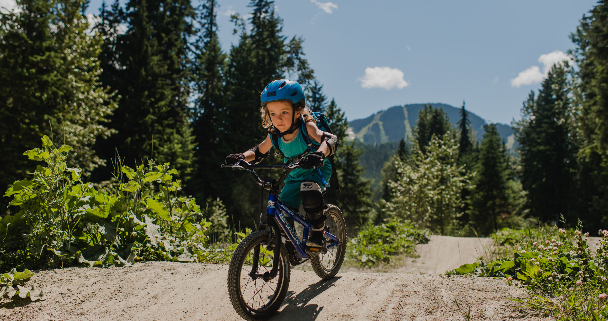
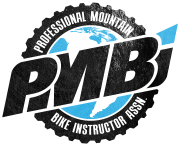

Axis Adventure Camps
Building a Lifetime of Memories
About Axis Adventures
The magic of Our Summer Camp
At Axis Adventure Camps, we offer kids of all ages an opportunity for growth. Our enriched biking program is designed for campers to promote independence and self-confidence all while making new friends and learning exciting new skills. We include additional daily sporting activities that support children's physical, social and emotional development. To find out more and to discover if our Summer Camp is a good fit for your child, please read on or get in touch with us.
Our People
PMBI (Professional Mountain Bike Instructors Association)
Our staff are PMBI (Professional Mountain Bike Instructors Association) certified, are highly trained, and first aid certified, with criminal record and background checks. Our camp is fully insured and registered within BC and Whistler, and is based in Function Junction.
Who are we?
Bike coaches, ski instructors and Whistler locals who love working with kids! Between us, we have extensive experience working with children of all ages and we specialize in working with kids aged 3-8. Having taught children for many many years in a variety of ways including kids sports programs and child care facilities in Whistler, we are passionate about helping children discover their love of biking and exploring the outdoors!